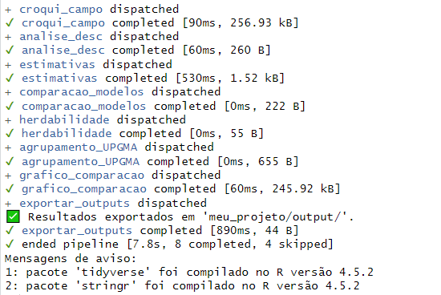
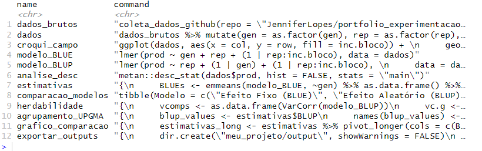
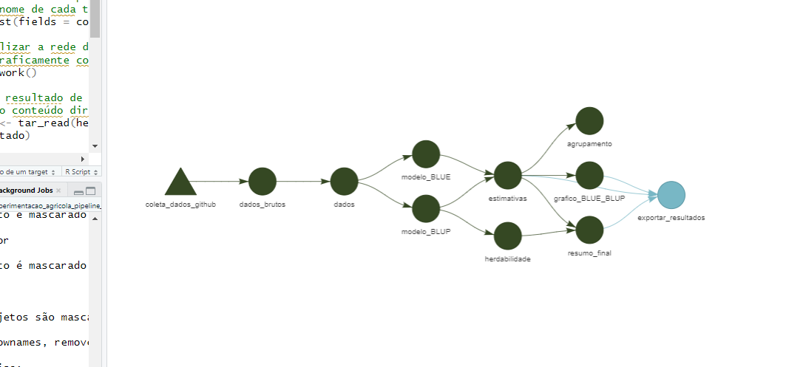
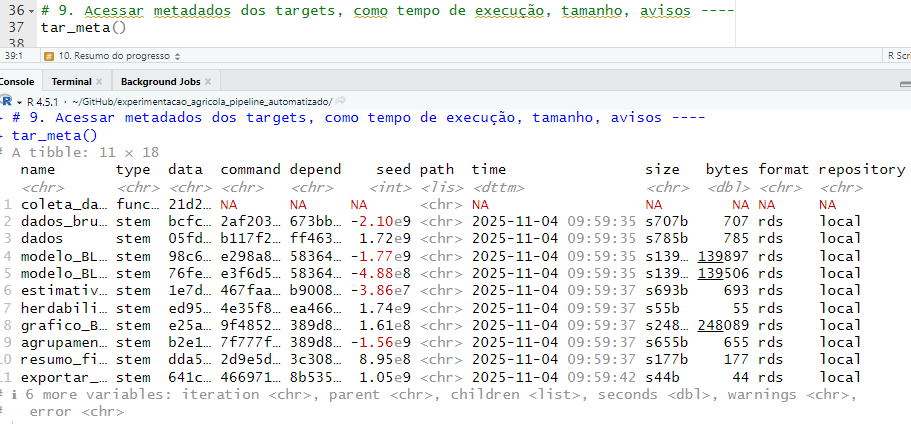
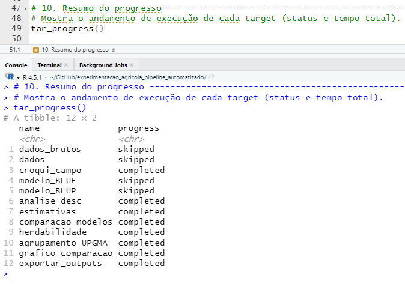
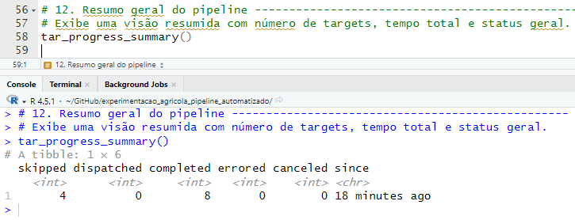

Automatização para análise de um pipeline experimental
Pacote targets
Este projeto utiliza dados experimentais simulados, desenvolvidos com o objetivo de reproduzir fielmente a complexidade de um ensaio real de melhoramento genético.
Foram aplicadas técnicas de estatística experimental, modelagem mista (BLUP/REML) e análises multivariadas para identificar genótipos superiores com base em critérios de desempenho.
A simulação permitiu validar todo o fluxo de análise, do delineamento ao ranqueamento final, consolidando um cenário realista de tomada de decisão em programas de melhoramento.
1 Referências complementares
A explicação completa sobre a modelagem estatística utilizada neste pipeline incluindo o detalhamento dos modelos mistos (REML/BLUP), ajustes, validações e interpretações está disponível nos links abaixo:


2 Sobre o pacote {targets}

O pacote evita o tempo de execução custoso para tarefas que já estão atualizadas, orquestra a computação necessária com computação paralela implícita e abstrai arquivos como objetos R. Se toda a saída atual corresponder ao código e aos dados upstream atuais, então todo o pipeline está atualizado e os resultados são mais confiáveis.
3 Objetivo
Este documento descreve o propósito e funcionamento dos dois principais scripts que compõem o pipeline automatizado de experimentação agrícola desenvolvido com o pacote {targets}.
4 Estrutura Geral do Projeto
experimentacao_agricola_pipeline_automatizado/
├── _targets.R # Definição do pipeline principal
├── _targets.yaml # Configurações adicionais do {targets}
├── rodar_pipeline.R # Script para execução e monitoramento
├── _targets/ # Banco interno de objetos, metadados e logs
│ ├── meta/ # Metadados de execução
│ └── objects/ # Objetos gerados em cada etapa
├── meu_projeto/
│ ├── dados/ # Dados experimentais (.xlsx)
│ ├── funcoes/ # Funções personalizadas
│ │ └── coleta_dados_github.R
│ ├── scripts/ # Scripts auxiliares e de testes
│ │ └── script_inicial.R
│ ├── output/ # Resultados exportados (planilhas e gráficos)
│ │ ├── grafico_comparacao_BLUE_BLUP.png
│ │ └── resultados_experimentais.xlsx
│ ├── figuras/ # Gráficos do pipeline ({targets})
│ │ ├── tar_make.png
│ │ ├── tar_manifest.png
│ │ ├── tar_meta.png
│ │ ├── tar_progress.png
│ │ ├── tar_summary.png
│ │ ├── tar_visnetwork.png
│ │ └── _targets_finalizado.png
│ ├── docs/ # Relatórios e apresentações
│ └── README.md # Descrição local do módulo4.1 Descrição do Pipeline {targets}
Cada etapa é reexecutada somente quando suas dependências mudam. Os nomes abaixo correspondem aos targets definidos em _targets.R.
| Etapa | Nome do target | Descrição |
|---|---|---|
| 1 | dados_brutos |
Coleta de dados experimentais via API GitHub |
| 2 | dados |
Ajuste de variáveis fatoriais e estrutura Alpha-Lattice |
| 3 | croqui_campo |
Visualização do layout experimental |
| 4 | analise_desc |
Estatísticas descritivas básicas |
| 5 | modelo_BLUE / modelo_BLUP |
Ajuste de modelos lineares mistos |
| 6 | comparacao_modelos |
Comparação dos modelos (AIC e LogLik) |
| 7 | estimativas |
Geração das estimativas BLUEs e BLUPs com intervalos de confiança |
| 8 | grafico_comparacao |
Comparação visual das estimativas |
| 9 | herdabilidade |
Cálculo da herdabilidade (H²) |
| 10 | agrupamento_UPGMA |
Agrupamento hierárquico de genótipos |
| 11 | exportar_outputs |
Exportação automática de planilhas e gráficos |
5 Script _targets.R
O arquivo _targets.R é o núcleo do pipeline. Ele define todas as etapas analíticas e controla as dependências entre elas.
- Cada target é uma unidade independente de processamento, e o
{targets}garante que apenas as etapas necessárias sejam executadas quando há alguma modificação.
5.1 O que deve ser desenvolvido no _targets.R
- Carregamento dos pacotes necessários: garante que todas as dependências estejam disponíveis para o pipeline.
- Definição das opções globais (
tar_option_set()): especifica os pacotes, formatos e opções padrão. - Importação de funções auxiliares (
source()): permite que funções externas sejam usadas, mantendo o código modular. - Definição dos targets (
list()): descreve cada etapa do pipeline, desde a coleta dos dados até a exportação dos resultados.
5.2 O que este _targets.R faz
O script executa automaticamente todo o fluxo analítico do delineamento Alpha-Lattice, seguindo a sequência:
| Etapa | Descrição |
|---|---|
| 1 | Coleta de dados via API do GitHub |
| 2 | Ajuste de variáveis fatoriais |
| 3 | Geração do croqui de campo |
| 4 | Análise descritiva básica |
| 5 | Ajuste dos modelos BLUE e BLUP |
| 6 | Comparação dos modelos (AIC e LogLik) |
| 7 | Cálculo das estimativas BLUE e BLUP com intervalos de confiança |
| 8 | Criação do gráfico de comparação BLUE × BLUP |
| 9 | Estimativa da herdabilidade (H²) |
| 10 | Agrupamento hierárquico (UPGMA) |
| 11 | Exportação automatizada de planilhas e gráficos |
Cada target é identificado, executado e armazenado no banco interno
_targets/.
O{targets}gerencia automaticamente o que precisa ser refeito, garantindo reprodutibilidade e eficiência.
6 Script rodar_pipeline.R
O script rodar_pipeline.R é responsável por executar, inspecionar e monitorar o pipeline.
Ele é o ponto de partida do projeto e deve ser executado no console do RStudio, ou num script a parte, como estou fazendo no nosso caso.
6.1 Funções principais utilizadas
Aqui, trouxe as funções que mais utilizo, mas fique à vontade para explorar mais funções na documentação do pacote.
| Função | Descrição |
|---|---|
tar_make() |
Executa o pipeline completo, recalculando apenas targets modificados. |
tar_manifest() |
Lista todos os targets e seus comandos. |
tar_visnetwork() |
Exibe um grafo interativo das dependências. |
tar_read() |
Lê um target sem carregá-lo no ambiente. |
tar_load() |
Carrega um ou mais targets no ambiente do R. |
tar_meta() |
Exibe metadados: tempo, avisos e tamanho dos objetos. |
tar_progress() |
Mostra o status de execução das etapas. |
tar_poll() |
Atualiza em tempo real o progresso da execução. |
tar_progress_summary() |
Exibe o resumo geral do pipeline. |
6.2 O que este script faz
- Inicializa o pacote
{targets}e executa o pipeline completo. - Gera relatórios de dependências e progresso, permitindo análise visual e textual.
- Carrega resultados específicos (ex:
herdabilidade,estimativas). - Facilita o monitoramento e depuração, centralizando o controle do fluxo analítico.
7 Local de uso e função de cada script
Esse é imponto importante. Os arquivos devem estar dentro de um projeto no RStudio e desta forma, principalmente o arquivo _targets.R.
| Script | Local | Função principal |
|---|---|---|
_targets.R |
Raiz do projeto | Define toda a lógica e as dependências do pipeline |
rodar_pipeline.R |
Raiz do projeto | Executa e monitora o pipeline |
meu_projeto/funcoes/ |
Subpasta de funções | Armazena funções auxiliares (ex: coleta_dados_github.R) |
8 Execução prática
Após configurar o projeto, execute:
# Executar pipeline completo
source("rodar_pipeline.R")
# Visualizar dependências
targets::tar_visnetwork()
# Ler resultados
targets::tar_read(herdabilidade)
targets::tar_read(estimativas)9 Principais resultados
9.1 Executar o pipeline completo - Função tar_make()
Importante: Reexecuta apenas as etapas (targets) que foram alteradas.
Durante a execução do pipeline, o {targets} está processando as etapas definidas no arquivo _targets.R, conhecidas como targets, cada uma é uma parte independente do fluxo (por exemplo, coleta de dados, modelagem, exportação). A cada linha exibida, o pacote informa o status de execução de cada target.
Pessoal, eu trouxe bem explicado, pois quando aprendi não foi tão simples compreender.
Interpretação do log:
dispatched: a etapa foi enviada para execução.
completed: o target foi executado com sucesso, acompanhado do tempo de processamento e do tamanho do objeto resultante (por exemplo, 256.93 kB).
skipped: o {targets} detectou que o objeto já estava atualizado e não precisou recalculá-lo, garantindo eficiência.
ended pipeline: indica que o pipeline terminou todas as etapas. Exemplo: ended pipeline [7.8s, 8 completed, 4 skipped] significa que a execução levou 7,8 segundos, com 8 etapas concluídas e 4 reutilizadas do cache.
Mensagens de aviso (como pacote compilado em versão diferente) não indicam erro, apenas alertam sobre compatibilidade de pacotes.

9.2 Ver manifesto do pipeline - Função tar_manifest()
Essa etapa gera duas variáveis importantes para vocês analisarem:
| Coluna | Descrição |
|---|---|
| name | Nome do target (a etapa do pipeline). Exemplo: dados_brutos, modelo_BLUP, exportar_outputs. |
| command | Código que o {targets} executa para gerar aquele target. Pode ser uma função, um pipeline (%>%), ou um bloco de código delimitado por {}. |
Cada linha representa uma etapa independente do pipeline e mostra a lógica de execução associada.
Exemplos:
dados_brutos: executacoleta_dados_github(), buscando o arquivo de dados via API.modelo_BLUE: ajusta o modelo linear misto com genótipo como efeito fixo.
Com isso, essa função deve ser utilizada para:
- Auditar o pipeline: ver exatamente o que cada target faz.
- Verificar reprodutibilidade: garante que todos os comandos estão documentados.
- Depurar etapas: identificar onde ajustar códigos, nomes ou dependências.
- Controlar rastreabilidade: serve como histórico transparente de execução.

9.3 Visualizar a rede de dependências - Função tar_visnetwork()
A imagem apresentada, abaixo foi gerada pela função tar_visnetwork(), responsável por criar uma visualização interativa da rede de dependências do pipeline {targets}.
Cada nó do grafo representa um target (ou função) definido no script
_targets.R, e as setas indicam as relações de dependência entre eles, ou seja, quais etapas precisam ser concluídas antes que outras possam ser executadas.Os triângulos, como o
coleta_dados_github, representam funções auxiliares utilizadas no pipeline.Os círculos verdes indicam targets atualizados (Up to date), que não precisaram ser recalculados porque seus insumos não mudaram desde a última execução.
Já os nós azulados mostram targets obsoletos (Outdated), que foram reprocessados devido a alguma modificação em etapas anteriores ou em seus dados de entrada.
Essa visualização permite compreender de forma clara o fluxo lógico do projeto, começando na coleta dos dados, passando pelas etapas de tratamento, modelagem, análises e, finalmente, chegando à exportação dos resultados.
O
tar_visnetwork()é, portanto, uma ferramenta fundamental para monitorar, auditar e depurar pipelines complexos, assegurando que o encadeamento das tarefas esteja coerente e reprodutível.

9.4 Acessando os metadados dos targets - Função tar_meta()
A função tar_meta() fornece uma visão detalhada dos metadados de cada target do pipeline {targets}, permitindo inspecionar informações importantes sobre a execução, como o tempo de processamento, o tamanho dos objetos gerados, o formato de armazenamento, além de possíveis avisos e erros.
A tabela retornada mostra colunas como name (nome do target), time (momento de execução), size (tamanho em memória), bytes (peso em disco) e format (tipo de arquivo salvo, geralmente
.rds).Essas informações são fundamentais para avaliar o desempenho e a eficiência do pipeline, pois ajudam a identificar quais etapas demandam mais tempo ou consomem mais recursos.
Também permitem detectar targets que não foram atualizados, que geraram avisos ou erros durante a execução.
Assim, a função
tar_meta()atua como uma ferramenta de auditoria técnica do pipeline, oferecendo rastreabilidade completa das execuções e auxiliando na depuração, otimização e validação.

9.5 Resumo do progresso - Função tar_progress()
A função tar_progress() exibe um resumo do andamento de execução de cada target do pipeline {targets}, permitindo acompanhar o status e o tempo total de processamento de cada etapa.
O resultado mostrado indica que alguns targets foram marcados como completed, ou seja, concluídos com sucesso durante a execução atual, enquanto outros aparecem como skipped, significando que o pacote reconheceu que esses objetos já estavam atualizados e, portanto, não precisavam ser recalculados.
Esse comportamento é uma das maiores vantagens do
{targets}: ele identifica automaticamente o que mudou e processa apenas o necessário, otimizando tempo e recursos computacionais.
9.6 Resumo da execução do pipeline - Função tar_progress_summary()
A função tar_progress_summary() apresenta um resumo consolidado da execução do pipeline, reunindo em uma única tabela as principais informações sobre o status geral dos targets.
- Ela mostra quantos foram executados com sucesso (completed), quantos foram reaproveitados do cache (skipped), quantos estão em execução (dispatched) e se houve algum target com erro (errored) ou cancelado (canceled), além do tempo decorrido desde a última execução.
No exemplo exibido, o pipeline teve 8 etapas concluídas e 4 reaproveitadas, sem nenhum erro ou cancelamento, indicando uma execução limpa e estável.
- Essa função é especialmente útil para verificar rapidamente o desempenho e o estado geral do pipeline sem precisar analisar cada target individualmente, funcionando como um painel de controle resumido que confirma se o fluxo foi executado de forma eficiente.

10 Considerações finais
A implementação deste pipeline automatizado com o pacote {targets} demonstra o potencial das ferramentas reprodutíveis em projetos de experimentação agrícola e outros tipos de projetos.
O fluxo foi estruturado de forma a integrar coleta de dados, análises estatísticas mistas (BLUE/BLUP), visualizações, exportação automatizada e publicação direta via Quarto, consolidando um ciclo completo e rastreável de análise.
A automação elimina redundâncias, reduz erros manuais e garante que cada execução reflita fielmente as alterações nos dados ou nos modelos.
11 Referências complementares
A explicação completa sobre a modelagem estatística e o detalhamento dos resultados estão disponíveis nos links abaixo: